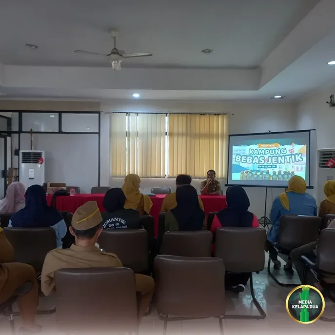

Berita Wilayah

Persiapan Mini Konvensi Kader Jumantik RW 08 Kelapa Dua Tetap Berjalan Penuh Semangat
Tanggal, 9 November 2026
MediaKada | Kader Jumantik RW 08 Kelurahan Kelapa Dua terus mematangkan persiapan menghadapi mini konvensi dalam rangka Lomba Kampung Bebas Jentik Tingkat Provinsi DKI Jakarta yang akan dilaksanakan pada 11 November 2026.
Meskipun terdapat beberapa poin penilaian yang belum maksimal saat pelaksanaan verifikasi lapangan pada 3 November 2026, semangat para kader tidak surut. Sebaliknya, kondisi tersebut menjadi motivasi untuk terus berbenah dan menampilkan yang terbaik pada tahap mini konvensi mendatang.
Berbagai persiapan terus dilakukan secara intensif, mulai dari penyusunan materi presentasi, penguatan program unggulan, hingga koordinasi antar kader guna memastikan seluruh potensi dan pencapaian Kampung Bebas Jentik RW 08 dapat tersampaikan dengan baik di hadapan tim penilai.
Ketua RW 08 Kelapa Dua, Bisri Ali, mengajak seluruh kader untuk tetap optimistis dan tidak patah semangat meskipun mengalami pengurangan poin pada tahap verifikasi lapangan. Saya berharap seluruh Kader Jumantik RW 08 tetap bersemangat dan tidak patah arang dalam menghadapi mini konvensi. Meskipun ada poin yang hilang pada saat verifikasi lapangan, masih ada kesempatan untuk memperbaikinya melalui pemaparan program unggulan yang telah dijalankan selama ini," ujar Bisri Ali.
Menurutnya, kerja keras dan dedikasi para kader selama ini merupakan modal penting untuk menunjukkan bahwa RW 08 Kelapa Dua memiliki komitmen kuat dalam upaya pencegahan dan pemberantasan sarang nyamuk di lingkungan masyarakat.
Dengan semangat kebersamaan dan dukungan seluruh warga, Kader Jumantik RW 08 Kelapa Dua optimistis dapat memberikan penampilan terbaik dalam mini konvensi serta membawa nama baik wilayah pada ajang Lomba Kampung Bebas Jentik Tingkat Provinsi DKI Jakarta.